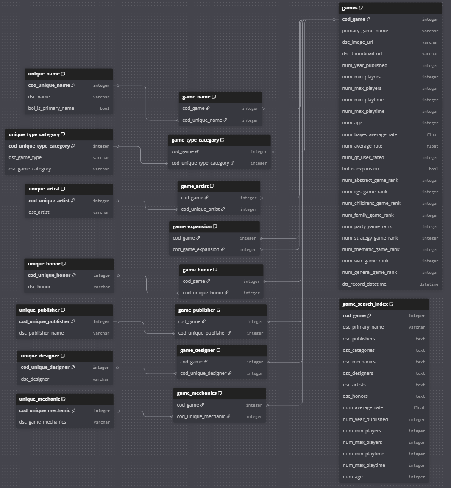
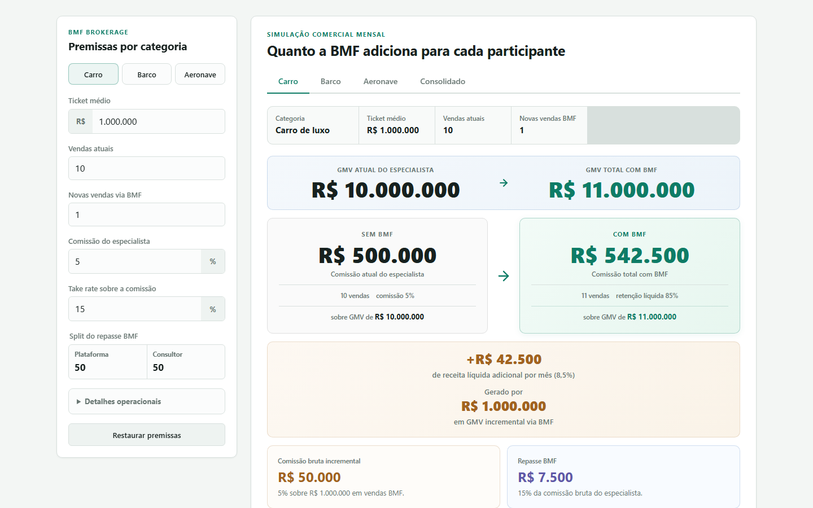

Sete anos construindo na fronteira entre negócio, dados e IA no setor financeiro — Itaú Unibanco e XP Inc. Antes disso, duas graduações em engenharia mecânica de precisão. É de lá que vem o jeito de trabalhar: medir antes de opinar, especificar antes de construir, entregar dentro da tolerância.
MECÂNICA DE PRECISÃO
DADOS & ANALYTICS
IA GENERATIVA
PRODUTO EM PRODUÇÃO
Fig. 00 — a mesma pessoa em três vocabulários. O terceiro só funciona porque os dois primeiros existem.
Cada frente vem com a evidência que a sustenta. Nenhuma delas é aspiracional.
IA generativa & agentes
Desenho e implemento agentes acoplados a fluxos analíticos que já existem, no lugar de criar mais uma ferramenta paralela. Trabalho com múltiplos provedores atrás de uma mesma abstração, prompt caching, tool calling e orquestração de custo por etapa.
Evidência · Agentes em produção no Itaú BBA, adotados por diferentes áreas de negócio e reconhecidos formalmente pela velocidade de entrega. Motor de busca com pipeline em 4 estágios que derruba o custo de LLM em ordens de grandeza. Servidor MCP próprio rodando modelo local.
Claude
OpenAI
OpenRouter
MCP
Ollama
RAG
Dados & analytics engineering
Modelagem dimensional, pipelines em camadas, qualidade de base e a ponte entre o dado bruto e a decisão. Fui referência técnica de Python, Spark e SQL dentro de uma corretora de capital aberto.
Evidência · Tech lead de analytics engineering na XP, responsável por modelos e relatórios usados de forma recorrente pelas áreas de Receita e Ciência de Dados. Schema dimensional em três camadas construído do zero em projeto próprio.
SQL
Python
PySpark
Databricks
AWS
R
Engenharia de software
Aplicação inteira, não protótipo: modelagem de dados, migrations versionadas, camada de serviço separada da de rota, testes automatizados, CI e deploy. Escrevo decisões de arquitetura em ADR para que outra pessoa consiga assumir o código.
Evidência · ERP multi-filial em produção com ~26.500 linhas, 36 migrations e cerca de 33 arquivos de teste. App desktop com 163 testes e CI. Projeto que combina .NET, React/TypeScript e uma engine C++ com ABI versionada.
FastAPI
SQLAlchemy
Alembic
PostgreSQL
.NET
React/TS
C++
pytest
BI & gestão de indicadores
Definir o indicador certo é mais difícil do que plotá-lo. Estruturei metas e indicadores de assessores, diretoria e CEO, e hoje ensino o assunto em MBA. Sei separar métrica que orienta decisão de métrica que só enfeita slide.
Evidência · Estrutura de indicadores e metas na XP até o nível de CEO. Professor de MBA nas disciplinas Fundamentos de BI e Gestão de Indicadores. Dashboards gerenciais e táticos para operação antifraude.
Power BI
Streamlit
Chart.js
QuickSight
DRE gerencial
RFM
Engenharia mecânica & processos
Duas graduações em mecânica de precisão. Isso significa ler desenho técnico, entender tolerância, cadeia produtiva e chão de fábrica — e conversar com um cliente industrial sem tradutor no meio. Mapeamento e melhoria de processo é a mesma disciplina aplicada fora da oficina.
Evidência · Bacharelado na Universidade Cruzeiro do Sul e graduação tecnológica na FATEC-SP, ambas em mecânica de precisão. Projetos de mapeamento e melhoria contínua como consultor autônomo.
Desenho técnico
Mapeamento de processos
Melhoria contínua
Estatística
Ensino & facilitação
Explicar é parte do trabalho técnico, não um extra. Dou aula de MBA, mentoro profissionais em transição e facilito eventos ao vivo. Na prática: consigo capacitar o time do cliente em vez de deixar uma dependência.
Evidência · Mais de 20 horas de aula gravadas para MBA em Business Intelligence. Mentor e monitor de Data Science na Escola DNC. Professor particular de profissionais em transição para dados desde 2021.
MBA
Mentoria
Treinamento in-company
Facilitação ao vivo
Onde isso foi construído
Trajetória
Por tempo e escopo, não por data de crachá.
Itaú Unibanco · Itaú BBA
+1 ano · Líder de projetos e especialista de produtos · Consultor de dados & analytics Sr
Atuo no setor de investimentos, liderando uma das frentes de desenvolvimento de um novo negócio do banco. Antes disso, fui consultor de dados e analytics para áreas do banco de atacado, disseminando boas práticas de data science, big data e IA.
Desenhei e implementei agentes de IA generativa integrados a fluxos analíticos existentes, automatizando análises manuais repetitivas. A prática foi adotada por diferentes equipes de negócio e reconhecida formalmente pela velocidade de entrega.
XP Inc.
4+ anos · Senior Business Analyst / Tech Lead · Analytics Engineer · Data Analyst
Canal B2B, expansão e estratégia de distribuição de produtos no varejo. Fui responsável pela estratégia comercial e pela curadoria de qualidade das carteiras dos clientes, com temas de risco de carteira, cross-sell, alocação, diversificação e rentabilidade.
Estruturei indicadores e metas de assessores, diretores e do CEO, e me tornei tech lead de analytics engineering em diversos projetos. Mentorei analistas, criei e conduzi o processo de recrutamento técnico da área e recebi o prêmio de melhor treinamento interno em 2021, com a trilha de Python.
Consultor e professor autônomo
Desde 2021 · Data Science & Analytics
Consultoria para empresas de ramos diversos: melhoria contínua, ciência de dados, mapeamento de processos, gestão e estratégia. Ministro aulas particulares e treinamentos empresariais de analytics e data science.
Em projeto independente, construí um sistema com IA que organiza bases de prospects multinacionais, gera contratos automaticamente e identifica filiais de um mesmo grupo entre países mesmo quando o nome diverge — revelando sinergias comerciais que estavam invisíveis.
Docência: Tetra Educação · Escola DNC
Em paralelo · Professor de MBA · Mentor de Data Science
Gravei mais de 20 horas de aula para MBA em Business Intelligence, nas disciplinas Fundamentos de BI e Gestão de Indicadores. Na Escola DNC, fui mentor e líder em projetos educacionais de dados e gestão de indicadores, além de facilitador de eventos ao vivo.
HS Prevent · Laureate International Universities
Início de carreira · Analista de BI (estatístico) · Assistente financeiro
Na HS Prevent, empresa de combate e prevenção a fraude, desenvolvi dashboards gerenciais e táticos e apliquei machine learning em modelos que apoiaram decisão. Na Laureate, atuei no setor financeiro com melhoria contínua de processos.
Base formal
Quatro graduações, um arco
Da peça usinada ao modelo estatístico: o que muda é o objeto, não o método.
MBA
Data Science & Analytics
USP / ESALQ
Pós-graduação
Data Science
Universidade Anhembi Morumbi
Bacharelado
Mecânica de Precisão
Universidade Cruzeiro do Sul
Graduação tecnológica
Mecânica de Precisão
FATEC — São Paulo
A engenharia mecânica não é uma nota de rodapé no currículo. É a razão de eu conversar com um cliente industrial no vocabulário dele, entender restrição física antes de propor automação, e tratar software como algo que precisa de especificação, tolerância e verificação.
Construído por mim, do zero
Projetos
Projetos pessoais e de clientes, com números reais. Os repositórios de código são privados; a arquitetura e a escala estão descritas em cada ficha.
Fig. 01
Medix ERP
ERP multi-filial · em produção
Problema · Uma distribuidora do setor médico operava o negócio inteiro dentro de uma planilha Excel: estoque, pedidos, financeiro e apuração de resultado. Sem trilha de auditoria, sem controle de acesso, e quebrando conforme a operação crescia.
O que construí · Um ERP web completo que cobre o ciclo comercial ponta a ponta — cadastros, importação com geração de lote de estoque e conta a pagar, pedidos com baixa automática, cálculo de CMV, comissão e lucro, contas a pagar e receber com baixa parcial e estorno, DRE gerencial por competência e por caixa, dashboard de BI, ranking de clientes por RFM e auditoria. A exportação em Excel mantém o mesmo contrato de abas da planilha original, então a equipe migrou sem reaprender nada.
Decisão técnica · Regra de negócio isolada em uma camada de serviços separada das rotas HTTP, o que permitiu escrever teste de DRE, comissão e parcelamento sem subir a aplicação. Scripts de auditoria pré-deploy, somente leitura, verificam integridade financeira e de acesso antes de cada publicação.
Fig. 01 — camadas do Medix ERP: a regra de negócio não mora na rota
Problema · Busca por linguagem natural em catálogo grande costuma custar caro: joga-se o catálogo inteiro no contexto do modelo e paga-se por isso a cada consulta. Em catálogos de dezenas de milhares de itens, a conta não fecha.
O que construí · Um pipeline de quatro estágios. Um modelo barato extrai as dimensões de filtro do pedido em linguagem natural. O SQL sobre um schema dimensional reduz mais de 20 mil itens a algumas dezenas de candidatos, com custo zero de IA. Um estágio conversacional opcional refina. Só então o modelo bom ordena os finalistas. Total: algumas centenas de tokens por busca.
Decisão técnica · Provedores de IA atrás de uma abstração própria com fábrica de providers: Claude, OpenAI e OpenRouter são trocáveis por estágio via variável de ambiente, sem tocar em código. Cada vertical novo é a implementação de uma interface, não um fork.

Fig. 02 — schema dimensional em três camadas, modelado do zero
Problema · Planejamento patrimonial no Brasil é feito em planilhas isoladas: uma para aposentadoria, outra para sucessão, outra para imposto. Ninguém vê o efeito de uma decisão sobre as demais.
O que construí · Dez módulos integrados: perfil, patrimônio com taxonomia hierárquica em três níveis, aportes, aposentadoria com INSS e previdência privada, sucessório, riscos e lacuna de seguros, tributário com as faixas do IRPF, e um simulador com projeção de evolução patrimonial, Monte Carlo em percentis de p10 a p90 e comparação de cenários.
Decisão técnica · Dado pessoal sensível tratado como requisito de projeto, não como remendo: CPF e data de nascimento criptografados em repouso, hash determinístico com pepper para permitir busca, trilha de auditoria, rate limiting, exclusão definitiva agendada e um DPIA escrito antes da primeira linha de LGPD virar problema.
Problema · Fichas de RPG são planilhas de regras encadeadas: mudar uma raça recalcula atributos, perícias, defesa e pontos de vida. Fazer isso à mão erra, e errar estraga a mesa.
O que construí · Um app desktop com assistente de criação em cinco etapas e pré-visualização ao vivo, cálculo automático com detalhamento da origem de cada modificador, controle de sessão com 35 condições, evolução de nível, inventário com capacidade de carga, e exportação para PDF editável desenhada por cima do template oficial, com anexos gerados quando o conteúdo excede a página.
Decisão técnica · O motor de regras é composto só de funções puras, proibido de importar a biblioteca de interface ou guardar estado. É por isso que 163 testes rodam em milissegundos e a regra pode ser auditada sem abrir a tela. As bases do jogo ficam em JSON validado no CI, não em código.
Fig. 04 — fluxo unidirecional: a regra é auditável sem abrir a interface
Problema · Apps de karaokê dependem de streaming de terceiros, o que cria um problema de licenciamento antes mesmo do primeiro usuário.
O que construí · A música continua no player do próprio usuário; o sistema gerencia participantes, fila, preparação, aceite, estado de pronto, contagem regressiva e persistência da sessão. O celular vira controle pela rede local, via QR Code.
Decisão técnica · O projeto existe para exercitar amplitude de stack em uma fronteira só: domínio em C# com máquina de estados, host Kestrel com REST e tempo real, cliente web em React/TypeScript e uma engine de áudio em C++ isolada atrás de uma ABI C versionada. Treze ADRs registram cada decisão e por quê.
Stack
.NET 10 · Avalonia · SignalR · EF Core · React/TS · Vite · C++/CMake
Escala
~5.900 linhas · 13 ADRs
Testes
xUnit · Vitest · CTest · CI em dois jobs
Status
Fatia vertical funcional
Fig. 06
Cliente ponta a ponta — psicologia perinatal
Presença digital, canal B2B e material comercial
Problema · Uma profissional autônoma precisava existir online, abrir um canal corporativo e enviar propostas comerciais que não parecessem improvisadas — tudo sob as restrições de publicidade do Conselho Federal de Psicologia.
O que construí · Uma landing page para o público final e uma página dedicada ao público corporativo, ambas em produção com domínio próprio; e um gerador de propostas em HTML que edita valores na tela e imprime em PDF A4 formatado, sem instalar nada. Além disso, uma proposta comercial de oito páginas diagramada inteiramente em CSS, com qualidade de impressão.
Decisão técnica · Restrição regulatória tratada como requisito de conteúdo desde o início, e não como revisão no fim. Nenhuma dependência de framework: o material precisa continuar funcionando daqui a cinco anos sem alguém rodar um build.
Fig. 06 — identidade da landing page, no ar com domínio próprio
Problema · A área comercial precisava responder rápido quanto de receita incremental um negócio de alto valor gera de fato, depois de comissão, repasse, divisão com o consultor, imposto e custo.
O que construí · Uma calculadora pública que modela GMV atual e incremental, comissão bruta do especialista, take rate, divisão entre plataforma e consultor, impostos editáveis por categoria e custos fixos e variáveis — com resultado por categoria de ativo e consolidado.
Decisão técnica · Zero dependência e zero backend, para que a ferramenta continue viva sem manutenção. O painel de premissas vira gaveta no celular, porque a conversa comercial acontece com o telefone na mão.

Fig. 07 — premissas à esquerda, resultado por categoria de ativo à direita
Stack
HTML · CSS · JavaScript · sem dependências
Escala
2.815 linhas · 3 arquivos
Testes
Não aplicável
Status
Site estático publicável
Fig. 08
Operação de criação de sites
Processo comercial produtizado
Problema · Trabalho de freelance morre no operacional: cada cliente vira um contrato reescrito do zero, um briefing improvisado e um escopo que ninguém consegue provar depois.
O que construí · Um repositório que padroniza o ciclo comercial inteiro: contrato de criação, hospedagem e manutenção, anexo comercial, formulário de briefing espelhado em formulário online, e a estrutura de pastas por cliente. Markdown é a fonte da verdade e os documentos finais são gerados por script.
Decisão técnica · Um validador roda como git hook antes de cada commit e barra documento com campo não preenchido. O processo se autofiscaliza, em vez de depender de disciplina.
Stack
Python · python-docx · Markdown · git hooks
Escala
Ciclo comercial completo padronizado
Testes
Validação estrutural no pre-commit
Status
Em uso
Também no acervo
StemSeparator · separação de faixas de áudio com Demucs e PyTorch, com presets de qualidade
algoritmos_ML · algoritmos de machine learning implementados do zero, sem biblioteca pronta
R & SQL · modelagem de churn, clusterização de imagem e análise de microdados públicos
Ferramental
Stack
Tudo abaixo foi usado para entregar alguma coisa, não para preencher lista.
Linguagens
Python
SQL
PySpark
R
JavaScript
TypeScript
C#
C++
Dados & cloud
Databricks
AWS Athena
SageMaker
QuickSight
PostgreSQL
SQLite
pandas
NumPy
SciPy
IA & LLM
Claude API
OpenAI API
OpenRouter
MCP
Ollama
Tool calling
Prompt caching
RAG
scikit-learn
Backend & web
FastAPI
SQLAlchemy
Alembic
Pydantic
Jinja2
.NET
React
Vite
Docker
BI & visualização
Power BI
Streamlit
Chart.js
matplotlib
seaborn
Power Automate
Excel avançado
Práticas
Testes automatizados
CI/CD
Migrations versionadas
ADRs
Modelagem dimensional
LGPD · DPIA
Code review
Para uma consultoria enxuta
Onde eu somo
Time pequeno não tem espaço para especialista que só entrega uma etapa. O que eu ofereço é a cadeia inteira, de uma pessoa só.
Frente de IA sob demanda
Assumo a frente de IA de um projeto de cliente do começo ao fim: descobrir onde a automação paga a conta, prototipar, colocar em produção e explicar o custo por consulta antes de a fatura chegar.
Produto interno, do dado ao app
Se o cliente precisa de um sistema e não de um relatório, eu levo do modelo de dados até a aplicação no ar — com migrations, testes e deploy, não com um protótipo que morre na primeira mudança de regra.
Indicadores que sustentam decisão
Desenho a árvore de indicadores, a apuração e o painel. Já fiz isso até o nível de CEO em corretora de capital aberto, e ensino o assunto em MBA — o que ajuda a defender a escolha na frente do cliente.
Capacitação do time
Consigo deixar o time do cliente autônomo em vez de deixar uma dependência. Treinamento in-company, mentoria e documentação escrita para quem vai manter depois.
Interlocução industrial
Com duas graduações em mecânica de precisão, converso com cliente de manufatura no vocabulário dele: desenho, tolerância, processo e restrição física. Isso abre porta que consultoria de dados costuma não alcançar.
Material comercial que fecha
Proposta, calculadora de resultado, landing page e contrato padronizado. Já produtizei o próprio ciclo comercial, então sei o que um time de duas pessoas precisa parar de refazer manualmente.
Próximo passo
Vamos conversar
Me conte o problema e eu digo com franqueza se sou a pessoa certa para ele.